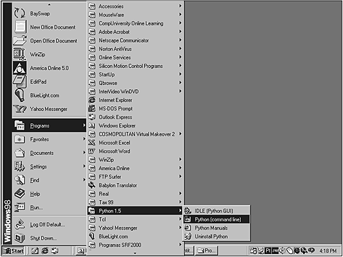
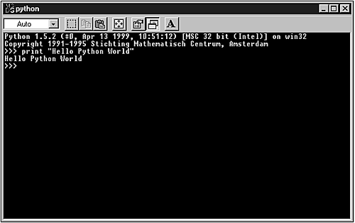
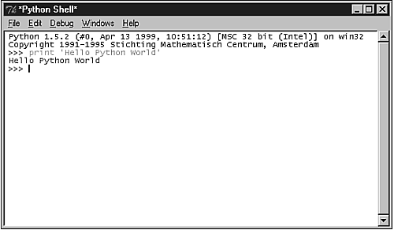

| < BACK | Make Note | Bookmark | CONTINUE > |
The Shell Environment
The Python language is wrapped within a shell development environment. The main component of this shell is a command line interpreter, which is perfect for practicing, learning, and testing your programs.
Command Line Interpreter
The command line interpreter is the heart of Python's shell environment. To access the command line interpreter, you need to switch to the prompt of your operating system. The following examples presume that the python directory is in your system's path environment variable.
On a UNIX system, you must type
$ python
If you are running MS Windows, just say
c:\> python
Note that in both cases, you just need to type the word python; the rest is part of the shell prompt.
The Python for Windows installation also provides access to the command line interpreter by clicking its icon on the Start menu (see Figure 2.1).
Figure 2.1. By clicking on the Python (command line) icon, you gain access to the shell environment.
After the command line interpreter is loaded (see Figure 2.2), you can start coding your own programs.
Figure 2.2. Python's command line interface is now ready to use.
Instead of using the command line interpreter, you can also use a graphical user interface called IDLE (see Figure 2.3).
Figure 2.3. IDLE is Python's GUI interpreter.
As you can see by looking at the coding area in both Figures 2.2 and 2.3, the interpreter's primary prompt is a >>>.
Let's start interacting with Python by running a variation of the standard "hello world" program.
>>> print "Hello Python World" Hello Python World
The previous example demonstrates that the screen is the standard output device for commands that are typed in the interpreter's prompt. Next, another example is demonstrated. Note that the first command doesn't print anything because it is just an assignment operation. The result of the operation is passed to and stored at the informed variable. On the other hand, the second command has its output redirected to the standard output, which enables you to see the result of the operation.
>>> alfa = 3 + 2 >>> alfa * 4 20
Python's syntax automatically indicates when a statement requires a subblock. The interpreter's secondary prompt … means that the next line is a continuation from the current line and not a new line. In some cases, when you finish entering a multiline statement, you need to type ENTER at the beginning of the first line located after the end of the code block. By doing so, you will return to the primary prompt.
Four basic situations that use a secondary prompt are as follows:
-
When you explicitly add a line continuation with a backslash \ literal:
>>> print "I am a lumberjack " + \ … "and I am OK." I am a lumberjack and I am OK.
-
When parenthetical expressions are incomplete:
>>> print ("I am a lumberjack " + \ … "and I am OK.") I am a lumberjack and I am OK. >>> a = { … 'song': 'lumberjack' … } -
Multiline statements ending with a :
>>> if 1==2: … print "This line will never be printed" … >>>
-
When you comment a line:
>>> # The next function statement returns 2 plus 2. … 2+2 4
Tip
If you need to quit the interpreter while working on UNIX or MS Windows systems, press CTRL+D or CTRL+Z, respectively.
| Last updated on 1/30/2002 Python Developer's Handbook, © 2002 Sams Publishing |
| < BACK | Make Note | Bookmark | CONTINUE > |